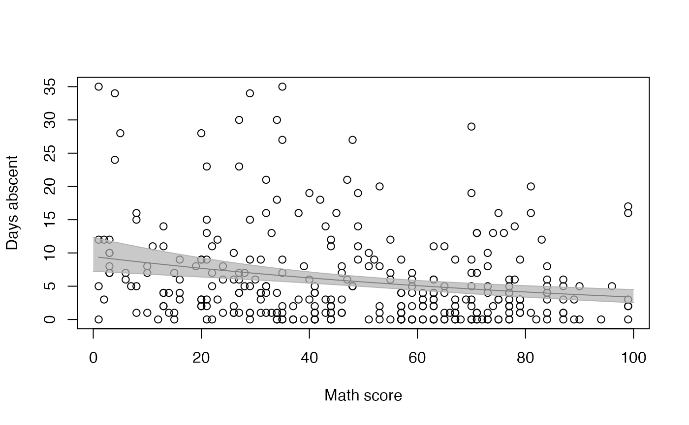
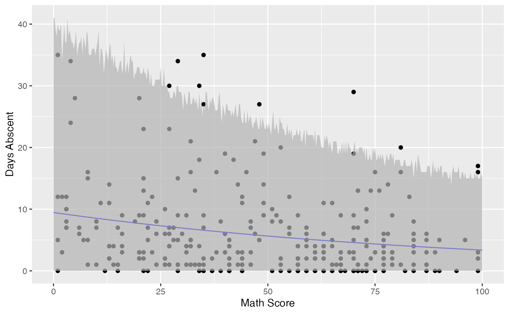

vignettes/intervals-mixpoissonreg.Rmd
intervals-mixpoissonreg.Rmdpredict methodThe predict method for mixpoissonreg objects allows one to obtain standard errors for the means in the scale of the linear predictors. To this end one must set the argument type to “link” to indicate that the predicted values will be given in the scale of the linear predictors and se.fit to TRUE. The predict method will return a list with two components: fit containing the fitted values and se.fit containing the standard errors.
For example:
library(mixpoissonreg)
fit <- mixpoissonreg(daysabs ~ gender + math + prog,
data = Attendance)
pred_fit <- predict(fit, type = "link", se.fit = TRUE)
head(pred_fit$fit)
#> 1 2 3 4 5 6
#> 1.679089 1.903565 2.158279 2.183221 2.270517 1.840271
head(pred_fit$se.fit)
#> 1 2 3 4 5 6
#> 0.1181008 0.1074558 0.1151626 0.1203237 0.1424633 0.1231964Since no data was passed, the predicted values were obtained with respect to the model’s data.
To pass a new data, one must pass a data.frame with the values of the covariates of interest to the newdata argument. For instance:
augment methodOne can also obtain the standard errors in a tidy manner by using the augment method with the argument type.predict to “link” and the argument se_fit to TRUE. This will return a tibble::tibble object with several columns, including .fitted containing the fitted values and .se.fit containing the standard errors.
The following example shows how to use the augment method to obtain the fitted values in the scale of the linear predictor along with the corresponding standard errors:
library(dplyr)
augment(fit, type.predict = "link", se_fit = TRUE) %>% dplyr::select(.fitted, .se.fit)
#> # A tibble: 314 x 2
#> .fitted .se.fit
#> <dbl> <dbl>
#> 1 1.68 0.118
#> 2 1.90 0.107
#> 3 2.16 0.115
#> 4 2.18 0.120
#> 5 2.27 0.142
#> 6 1.84 0.123
#> 7 1.89 0.113
#> 8 2.05 0.137
#> 9 1.75 0.107
#> 10 0.938 0.129
#> # … with 304 more rowspredict methodThe predict method for mixpoissonreg objects does not provide standard errors for the fitted values at the response scale, however it provides confidence intervals for the means at the response scale. To this end it is enough to set the interval argument to “confidence” since the default type of prediction is already “response”. It is also possible to change the level of confidence by setting the level argument, which defaults to 0.95.
For example:
fit_math <- mixpoissonreg(daysabs ~ math,
data = Attendance)
head(predict(fit_math, interval = "confidence"))
#> fit lwr upr
#> 1 4.930072 4.245108 5.725558
#> 2 7.152910 6.080109 8.415001
#> 3 7.689724 6.387717 9.257118
#> 4 8.014373 6.560871 9.789885
#> 5 9.262442 7.166667 11.971092
#> 6 4.538743 3.817703 5.395965
head(predict(fit_math, interval = "confidence", level = 0.99))
#> fit lwr upr
#> 1 4.930072 4.050190 6.001105
#> 2 7.152910 5.777451 8.855831
#> 3 7.689724 6.026016 9.812760
#> 4 8.014373 6.161026 10.425241
#> 5 9.262442 6.611655 12.975998
#> 6 4.538743 3.615709 5.697414One can, for instance, use this matrix to create a plot of the fitted values against the math variable along with their confidence intervals using R’s base graphics:
data("Attendance", package = "mixpoissonreg")
new_math <- seq(0, 100, by=0.25)
conf_fit <- predict(fit_math, newdata = data.frame(math = new_math), interval = "confidence")
graphics::plot(Attendance$math, Attendance$daysabs, xlab = "Math score", ylab = "Days abscent")
curve(exp(fit_math$coefficients$mean[1] + fit_math$coefficients$mean[2]*x), add = TRUE)
graphics::lines(new_math, conf_fit[, 2], col = grDevices::rgb(0.7, 0.7, 0.7))
graphics::lines(new_math, conf_fit[, 3], col = grDevices::rgb(0.7, 0.7, 0.7))
graphics::polygon(c(new_math, rev(new_math)), c(conf_fit[, 2], rev(conf_fit[, 3])),
col = grDevices::rgb(0.7, 0.7, 0.7, 0.7), border = NA)
Observe that the confidence intervals tend to be narrow. They are confidence intervals for the means, not for the response variables. The intervals that play the role of “confidence intervals” for response variables are the prediction intervals, which are much wider and provide estimate of intervals for which future observations will fall with the prescribed probability.
augment methodThe augment method produces confidence intervals for the mean parameters in the response scale by default. The confidence level can be changed by setting the level argument to the desired level.
For example, let us consider the fit_math object and get the confidence intervals with 99% level along with the response variable daysabs and the covariate math:
augment(fit_math, level = 0.99) %>% select(math, daysabs, .fittedlwrconf, .fitteduprconf)
#> # A tibble: 314 x 4
#> math daysabs .fittedlwrconf .fitteduprconf
#> <dbl> <dbl> <dbl> <dbl>
#> 1 63 4 4.25 5.73
#> 2 27 4 6.08 8.42
#> 3 20 2 6.39 9.26
#> 4 16 3 6.56 9.79
#> 5 2 3 7.17 12.0
#> 6 71 13 3.82 5.40
#> 7 63 11 4.25 5.73
#> 8 3 7 7.12 11.8
#> 9 51 10 4.90 6.35
#> 10 49 9 5.01 6.48
#> # … with 304 more rowsLet us now use the augment method to produce a plot of the data, the fitted curve and the confidence intervals with confidence level of 99%:
library(ggplot2)
fit_data <- augment(fit_math) %>% dplyr::select(math, daysabs) %>%
dplyr::rename("Math Score" = math, "Days Abscent" = daysabs)
new_math <- seq(0, 100, by=0.25)
fit_int <- augment(fit_math, newdata = data.frame(math = new_math), level = 0.99) %>%
dplyr::rename("Math Score" = math) %>% mutate("Days Abscent" = 0)
ggplot(fit_data, aes(x = `Math Score`, y = `Days Abscent`)) + geom_point() +
geom_function(fun = function(x){exp(fit_math$coefficients$mean[1] +
fit_math$coefficients$mean[2]*x)}, colour = "blue") +
geom_ribbon(data = fit_int, aes(ymin = .fittedlwrconf, ymax = .fitteduprconf),
fill = "grey70", alpha = 0.7)predict methodLet us now use the predict method to obtain prediction intervals for the reponse variables. As we did not obtain an approximate distribution for the response variable, we obtain the prediction intervals by simulation, which is computationally intensive.
To obtain prediction intervals, one must set the interval argument to “prediction” since the default type of prediction is already “response”. It is also possible to change the significance level by entering the level argument, which defaults to 0.95, to change the number of mean and prediction parameters generated by setting the nsim_pred argument to the desired value, the default is 100, and to change the number of response variables y generated for each pair of mean and precision parameters by setting the nsim_pred_y to the desired value, the default is 100.
For example, we will consider nsim_pred = 50 and nsim_pred_y = 50 to avoid long computations in our example:
fit_math <- mixpoissonreg(daysabs ~ math,
data = Attendance)
head(predict(fit_math, interval = "prediction", nsim_pred = 50, nsim_pred_y = 50))
#> fit lwr upr
#> 1 4.930072 0 21
#> 2 7.152910 0 29
#> 3 7.689724 0 33
#> 4 8.014373 0 32
#> 5 9.262442 0 40
#> 6 4.538743 0 20
head(predict(fit_math, interval = "prediction", level = 0.99, nsim_pred = 50, nsim_pred_y = 50))
#> fit lwr upr
#> 1 4.930072 0 30
#> 2 7.152910 0 44
#> 3 7.689724 0 48
#> 4 8.014373 0 50
#> 5 9.262442 0 56
#> 6 4.538743 0 26Notice that the intervals are now much wider.
We will now use the above matrix to create a plot of the fitted values against the math variable along with their prediction intervals using R’s base graphics:
new_math <- seq(0, 100, by=0.25)
pred_fit <- predict(fit_math, newdata = data.frame(math = new_math), interval = "prediction",
nsim_pred = 50, nsim_pred_y = 50)
plot(Attendance$math, Attendance$daysabs, xlab = "Math score", ylab = "Days abscent")
curve(exp(fit_math$coefficients$mean[1] + fit_math$coefficients$mean[2]*x), add = TRUE)
lines(new_math, pred_fit[, 2], col = grDevices::rgb(0.7, 0.7, 0.7))
lines(new_math, pred_fit[, 3], col = grDevices::rgb(0.7, 0.7, 0.7))
polygon(c(new_math, rev(new_math)), c(pred_fit[, 2], rev(pred_fit[, 3])),
col = grDevices::rgb(0.7, 0.7, 0.7, 0.7), border = NA)Observe that unlike the confidence intervals, the prediction intervals now cover the majority of the observed response variables. These intervals should be used for future observations as they are intervals such that the future response variables will fall with the prescribed probability.
augment methodTo obtain prediction intervals using the augment method, one must set the pred_int argument to TRUE. The significance level can be changed by setting the level argument to the desired level. To change the number of mean and prediction parameter generated, one must set the nsim_pred argument to the desired value, the default is 100, and to change the number of response variables y generated for each pair of mean and precision parameters, one must set the nsim_pred_y to the desired value, the default is 100.
For example, let us consider the fit_math object and obtain prediction intervals with 99% level along with the response variable daysabs and the covariate math. We will also set nsim_pred and nsim_pred_y to 50 to reduce computational cost.
augment(fit_math, pred_int = TRUE, level = 0.99,
nsim_pred = 50, nsim_pred_y = 50) %>% select(math, daysabs, .fittedlwrpred, .fitteduprpred)
#> # A tibble: 314 x 4
#> math daysabs .fittedlwrpred .fitteduprpred
#> <dbl> <dbl> <dbl> <dbl>
#> 1 63 4 0 31
#> 2 27 4 0 43
#> 3 20 2 0 44
#> 4 16 3 0 45
#> 5 2 3 0 59
#> 6 71 13 0 28
#> 7 63 11 0 32
#> 8 3 7 0 54
#> 9 51 10 0 32
#> 10 49 9 0 34
#> # … with 304 more rowsLet us now use the augment method to produce a plot of the data, the fitted curve and the prediction intervals with the default significance level:
fit_data <- augment(fit_math) %>%
dplyr::select(math, daysabs) %>%
dplyr::rename("Math Score" = math, "Days Abscent" = daysabs)
new_math <- seq(0, 100, by=0.25)
fit_pred <- augment(fit_math, newdata = data.frame(math = new_math),
pred_int = TRUE, nsim_pred = 50, nsim_pred_y = 50) %>%
dplyr::rename("Math Score" = math) %>% mutate("Days Abscent" = 0)
ggplot(fit_data, aes(x = `Math Score`, y = `Days Abscent`)) + geom_point() +
geom_function(fun = function(x){exp(fit_math$coefficients$mean[1] +
fit_math$coefficients$mean[2]*x)}, colour = "blue") +
geom_ribbon(data = fit_pred, aes(ymin = .fittedlwrpred, ymax = .fitteduprpred),
fill = "grey70", alpha = 0.7)